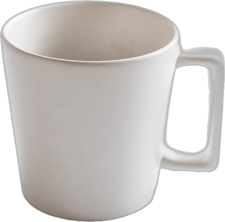
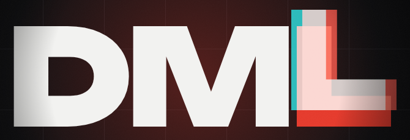

FRB

0
вспышек · 3 641 источник · 2018–2023
второй каталог CHIME/FRB
второй каталог CHIME/FRB

телескоп CHIME, Канада · Z22 · CC BY-SA 4.0

SGR 1935+2154
мы
28.04.2020
впервые — внутри нашей Галактики
NASA/JPL-Caltech/ESO/R. Hurt
видео: NASA Goddard · симуляция нейтронной звезды

NASA/JPL · типы нейтронных звёзд, слева — магнетар
ИСТОЧНИК
МАГНЕТАР
сверхнамагниченная мёртвая звезда
~30 000 св. лет

ОТКУДА ОСТАЛЬНЫЕ —
ИСТОРИЯ ОТКРЫТА
ИСТОРИЯ ОТКРЫТА
???
СЕГОДНЯ СЧИТАЕТСЯ УСТАНОВЛЕННЫМ
FRB существуют и приходят из других галактик


 журнал наблюдений
журнал наблюдений

КАК НАУКА ОТЛИЧАЕТ ОТКРЫТИЕ
ОТ ШУМА?
СКУЧНЫЕ ВЕЩИ
журнал наблюдений расписание обедов
расписание обедовкружка + дверца
ЭТО НАША МИКРОВОЛНОВКА
1998
НЕЗАКРЫТАЯ ДЕТАЛЬ
16 перитонов подряд за семь минут
повторить такую очередь дверцей не удалось
MNRAS 451:3933 · §3.5

0:03
ДЗЫНЬ

DARK MODE LAB · КАК ЛОМАЮТСЯ СИСТЕМЫ, КОТОРЫМ ВСЕ ДОВЕРЯЮТ
B · НАУКА ИЗНУТРИ · 01